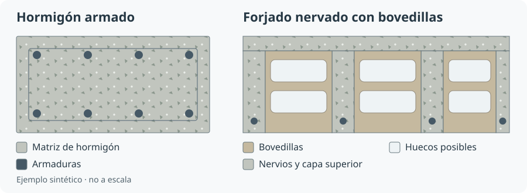
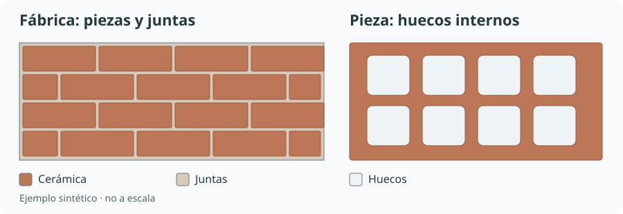

Materiales y productos compuestos
Estado: criterio metodológico propuesto para la cuantificación; todavía no ejecutado por un motor científico.
Un producto complejo puede contener varios materiales, productos intermedios y huecos. El árbol de interpretación no modifica el inventario original. Los grupos no aportan cantidades adicionales a las de sus hojas; la presencia de hojas identificadas no garantiza exhaustividad.
Hormigón armado y forjados

Separar matriz de hormigón y armaduras. En un forjado nervado, distinguir parte resistente, bovedillas y posibles huecos. Una capa de compresión registrada de forma independiente no debe volver a sumarse dentro de otra parte. No extrapolar proporciones a partir de la ilustración.
Fábricas y productos multicapa

Distinguir piezas, juntas y huecos según evidencia. Si se utiliza una densidad aparente que ya incorpora huecos, no descontarlos de nuevo. En placas con aislamiento, membranas y carpinterías, separar solo componentes respaldados; registrar incógnitas en lugar de inventar adhesivos, polímeros o espesores.
Decidir la resolución
flowchart TD
A[Parte física] --> B{Identificación suficiente}
B -->|Producto único| C[Correspondencia individual]
B -->|Varios componentes| D[Árbol cualitativo]
B -->|Desconocido| E[Pendiente]
D --> F[Hojas materiales, huecos e incógnitas]
C --> G[Cuantificación pendiente]
F --> GConsulta descomposición jerárquica, densidades y cálculo de masas.